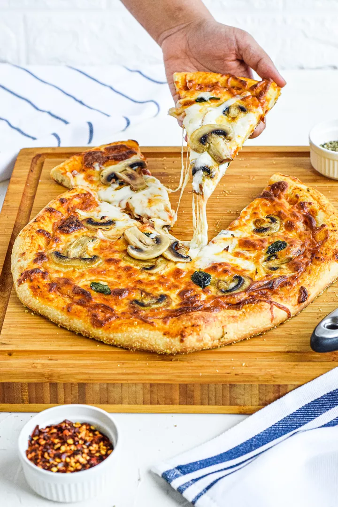

Homemade Pizza & Pizza Dough

The finished product of this recipe : a delicious homemade pizza
The iconic pizza, the famous italian delicacy adored all around the world, is a highly modular dish customizable to your heart's content.
You too can make this delicious dish with the help of Odin Recipes.
List of ingredients :
The pizza dough : Enough for two 10-12 inch pizzas
- 355 mL warm water (105°F-115°F)
- 2 1/4 teaspoons active dry yeast
- 490 g of bread flour
- 2 tablespoons of extra virgin olive oil (omit if cooking pizza in a wood-fired pizza oven)
- 2 teaspoons kosher salt
- 1 teaspoon sugar
Pizza ingredients and Topping options
- Extra virgin olive oil
- Cornmeal (to help slide the pizza onto the pizza stone)
- Tomato sauce (smooth or pureed)
- Firm mozzarella cheese, grated
- Fresh soft mozzarella cheese, separated into small clumps
- Fontina cheese, grated
- Parmesan cheese, grated
- Feta cheese, crumbled
- Mushrooms, very thinly sliced if raw, otherwise first sautéed
- Bell peppers, stems and seeds removed, very thinly sliced
- Italian pepperoncini, thinly sliced
- Italian sausage, cooked ahead and crumbled
- Sliced black olives
- Chopped fresh basil
- Baby arugula, tossed in a little olive oil, added as pizza comes out of the oven
- Pesto
- Pepperoni, thinly sliced
- Onions, thinly sliced raw or caramelized
- Ham, thinly sliced
Steps:
Making the pizza dough
- Proof the yeast